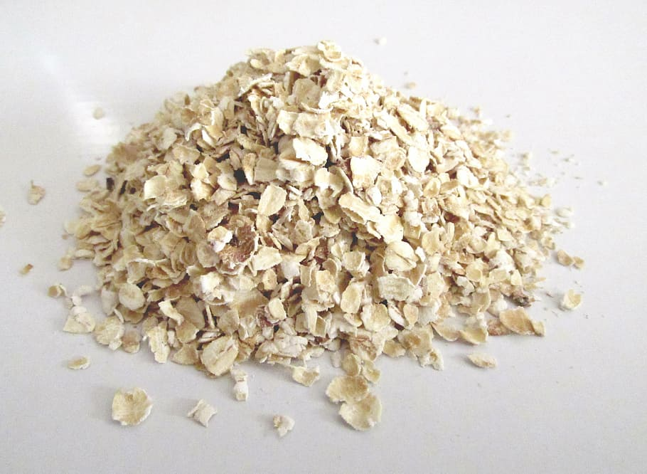

Oats!

Description
A hearty meal; served both hot and cold!
Be sure to like and subscribe!
Ingredients
- oats (dry)
- water (cold)
- sea salt
Steps
- pour water into pot
- sprinkle sea salt
- bring water to a boil
- pour in oats
- stir for three minutes
- serve and enjoy!